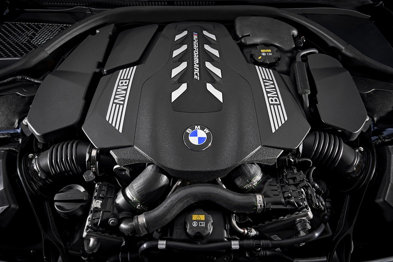
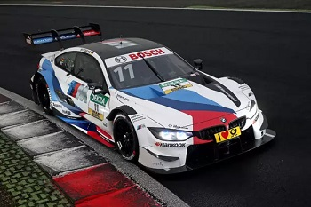

In calitate de pionier al automobilului, căutăm inovații care să asigure o mobilitate plăcută, sigură și prietenoasă cu resursele, zi de zi. Descoperiți ideile noastre vizionare pentru vehicule, conceptele de mobilitate, mobilitatea electronică și rețeaua digitală a viitorului - precum și soluțiile cu care modelăm deja prezentul. Cu strategia CASE, Daimler se concentrează pe cele patru tendințe majore care influențează mobilitatea viitoare - Connected, Autonom, Shared and Services și Electric. Iar Daimler progresează deja în toate aceste domenii pentru a contura viitorul mobilității. Fiecare din cele patru câmpuri CASE în sine schimbă deja mobilitatea fundamentală; cu toate acestea, potențialul revoluționar devine evident doar atunci când câmpurile CASE sunt combinate

M850I ENGINE
The 8 Series is based on the BMW Concept 8 Series that debuted at the 2017 Concorso d’Eleganza Villa d’Este, and featured a new design language and iteration of the iDrive system. The production version was officially unveiled at the 24 Hours of Le Mans on June 15, 2018. The BMW Concept M8 Gran Coupé was later introduced at the 2018 Geneva Motor Show, and is a high-performance four-door variant of the 8 Series which was unveiled in June 2019.
The 8 Series utilises a double-wishbone front suspension and rear multi-link suspension.The car uses BMW's Carbon Core technology, integrating carbon-fibre within its chassis. GPS navigation data is used for the 8-speed automatic transmission to predict upshifts or downshifts when approaching a junction, and cameras along with sensors are utilised to determine appropriate shutdowns for the engine start-stop system.
The convertible version of the 8 Series (G14) was launched in November 2018. The convertible features a folding cloth roof that operates in 15 seconds and can function up to 50 km/h (31 mph). Changes over the coupé include; new cross struts, new panels for the underbody and aluminium roll over bars for added safety. Initial models for the convertible include the M850i xDrive and 840d xDrive. The convertible weighs an additional 100 kg (220 lb) more than the coupé.
Sales of the 8 Series commenced in November 2018.
The Gran Coupé version of the 8 Series was announced in June 2019 and went on sale in September 2019. It has the same powertrains as the coupé and convertible, but it is the first 8 Series available with a six-cylinder engine for the United States.
Dezvoltarea tehnologică a fost întotdeauna un impuls pentru progres. Când Gottlieb Daimler și Carl Benz au proiectat primul motor pe benzină de mare viteză în 1885 și respectiv Patent Motor Car în 1886, ambele evenimente au fost revoluționare, nu doar pentru dezvoltarea automobilelor, ci și la nivel social mai larg. În urma lor, mobilitatea personală a fost în curând într-o creștere fără precedent. Această tendință a continuat până în zilele noastre, datorită și vehiculelor concept Mercedes-Benz. Aceste vehicule de concept au tehnologie inovatoare care este pregătită pentru comercializare - sau în unele cazuri a fost deja comercializată - în modele de producți

BMW COPYRIGHT
Pregătind lansarea noului BMW Seria 7, marca germană prezintă o primă serie de invoaţii din aresnalul care vor echipa noul model, multe din acestea marcând premiere mondiale pentru un model de serie. Noua limuzină de lux a mărcii îşi propune să fie liderul absolut în ceea ce priveşte dinamica, confortul, eficienţa şi sistemele de comunicare şi asistare pentru conducătorul auto.
BMW EfficientLightweight la noul BMW Seria 7: masa automobilului a fost redusă cu până la 130 de kilograme în comparaţie cu modelele anterioare.
Carbon Core: utilizarea extinsă a plasticului ranforsat cu fibră de carbon (CFRP) în celula pasagerilor prin transferul de tehnologie de la BMW i.
Noul motor pe benzină, cu şase cilindri în linie, din ultima generaţie de propulsoare a BMW Group; cea mai recentă tehnologie BMW TwinPower Turbo promite să ofere un nou nivel de eficienţă şi performanţe.
Puterea motorului transferată prin transmisia Steptronic cu opt trepte, o generaţie nouă cu eficienţă internă optimizată şi o strategie de schimbare a vitezelor asistată de informaţiile oferite de sistemul de navigaţie.
Disponibil standard şi cu design nou, butonul Driving Experience Control include acum şi modul ADAPTIVE.
Echilibru unic între calităţile sportive şi confortul călătoriei în segmentul sedanurilor de lux; ambele expresii ale plăcerii condusului îmbunătăţite semnificativ printr-o nouă tehnologie sofisticată a şasiului şi sisteme inovatoare: reglajele automobilului se setează fie automoa, în funcţiile de condiţiile drumului şi stilul de condus, fie în funcţie de preferinţele conducătorului.
Suspensie pneumatică pe ambele punţi, cu reglarea automată a gărzii la sol şi Dynamic Damper Control (control dinamic al amortizoarelor) disponibile standard.
Îmbunătăţire suplimentară a confortului călătoriei, a dinamicii şi a echilibrului pri tehnologii precum Integral Active Steering (direcţie adaptivă cu 4 roţi directoare) disponibilă acum în premieră absolută împreună cu BMW xDrive sau Dynamic Drive, dezvoltat suplimentar, care reduce ruliul prin intermediul barelor stabilizatoare reglate electromecanic.